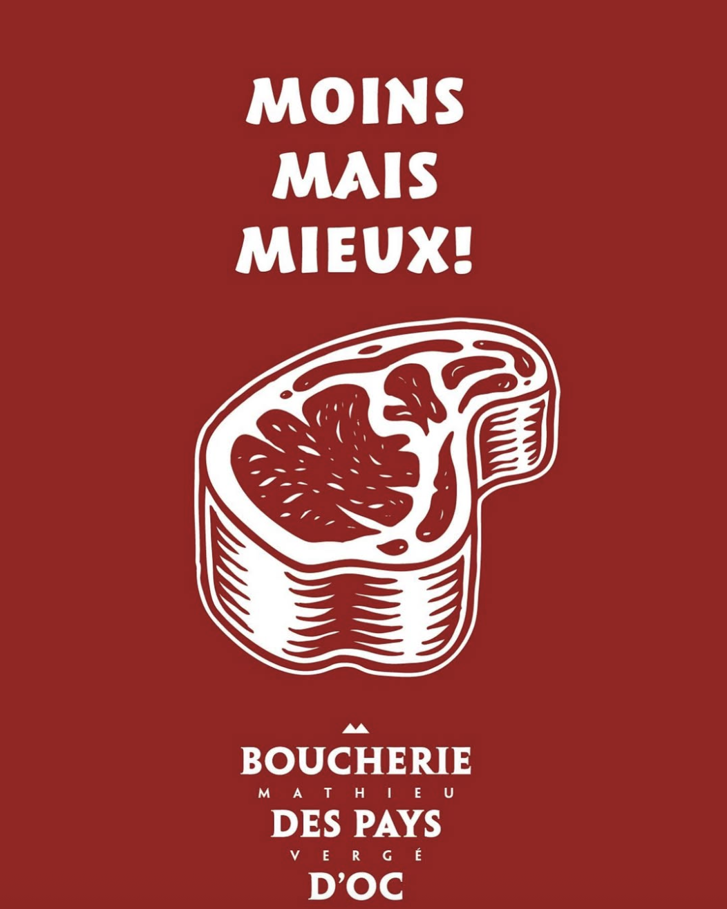
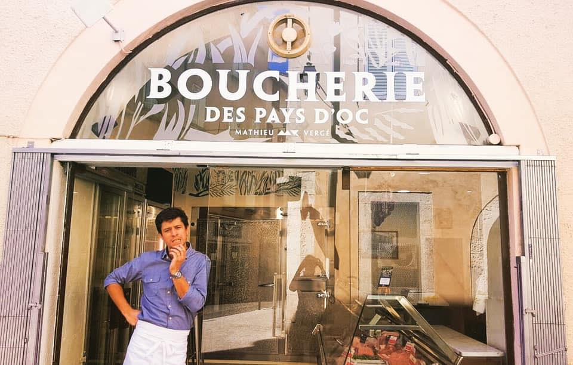

Castres, Occitanie
Des produits de qualité sélectionnés
pour leur goût et leur authenticité.

Sélection
Élevage plein air · persillée à souhait
28,90 €/kgAffinée 30 jours · tendreté incomparable
42,00 €/kg100 % bœuf pur · préparés chaque matin
14,90 €/kgÉlevé en Occitanie · chair fine et délicate
19,50 €/kgPlein air · alimentation naturelle
11,90 €/kgVeau rosé supérieur · découpé sur mesure
22,00 €/kgRecette maison · préparées chaque jour
13,50 €/kgTradition du Sud-Ouest · goût authentique
9,90 €/kg
Notre histoire
La Boucherie des Pays D'Oc est un engagement envers la qualité, le respect des animaux et les saveurs authentiques du sud de la France.
Nous sélectionnons nos viandes auprès d'éleveurs locaux de confiance, pour vous garantir fraîcheur, traçabilité et plaisir à chaque bouchée.
« Des produits de qualité sélectionnés
pour leur goût et leur authenticité. »
Horaires
| Lundi | Fermé |
| Mardi – Vendredi | 8h00 – 19h30 |
| Samedi | 7h30 – 19h30 |
| Dimanche | 8h00 – 13h00 |
Contact
Nous trouver
Itinéraire →